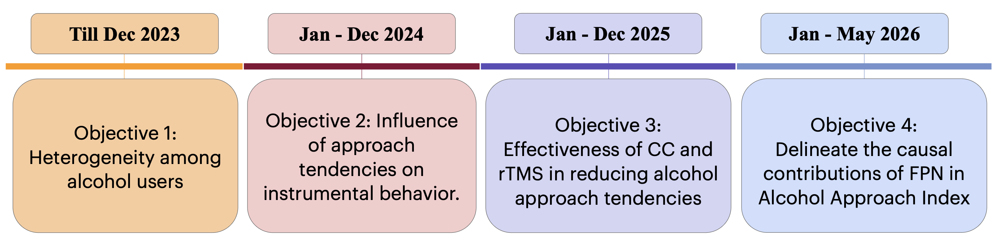

PMRF PROGRESS
Project Title: Event-Related Potentials and Cognitive Mechanisms in Specific Health Risk Behaviors

Objective 1: Neurocognitive Heterogeneity Among Alcohol Users
(Published — Biological Psychology, 2025)
- Classified alcohol-using individuals into approach-tendency and avoidance-tendency subgroups based on the Alcohol Approach Index derived from the Alcohol Approach-Avoidance Task (A-AAT)
- Approach-tendency individuals showed significantly attenuated right-frontal N2 and centroparietal P3b amplitudes during alcohol cue processing relative to avoidance-tendency individuals and non-drinking controls
- Avoidance-tendency individuals showed neural profiles statistically indistinguishable from non-drinkers despite comparable alcohol use histories, arguing against a uniform exposure-based account of neurocognitive deficits
- AAI scores correlated continuously with both ERP components, confirming that neurocognitive differences scale with the degree of approach bias rather than reflecting a categorical split
- Established that neurocognitive heterogeneity within alcohol users is meaningful and subgroup-specific, with direct implications for personalized intervention design
Objective 2: Influence of Approach Tendencies on Instrumental Behavior
(Preprint — BioRxiv; Under Review — Journal of Studies on Alcohol and Drugs)
- Employed a Pavlovian-to-Instrumental Transfer (PIT) paradigm to assess how background alcohol cues bias ongoing goal-directed instrumental behavior, a more ecologically representative measure of cue influence than the A-AAT alone
- Approach-tendency individuals showed attenuated right-frontal N2 during avoidance-congruent instrumental responding under alcohol cue influence, despite comparable behavioral error rates to avoidance-tendency individuals, indicating elevated neural regulatory burden at threshold in this group
- Established that the automatic system is not unitary and that single-measure outcome assessment in intervention research is insufficient
Objective 3: Modulation of Automatic Approach Tendencies Using Counterconditioning andExcitatory rTMS
(Preprint — BioRxiv; Under Review — Drug and Alcohol Dependence)
- Counterconditioning (CC) by pairing alcohol cues with monetary loss selectively reduced automatic pull towards alcohol in approach-tendency individuals, accompanied by partial restoration of attenuated ERP responses
- Active high-frequency (10 Hz) excitatory repetitive transcranial magnetic stimulation (rTMS) over the right dorsolateral prefrontal cortex (rDLPFC) selectively facilitated alcohol avoidance responses without modifying approach responses, establishing rDLPFC as specifically supporting avoidance implementation rather than suppressing automatic approach toward alcohol
- Concurrent ERP data showed enhanced right-frontal N2 following active rTMS, consistent with strengthened conflict monitoring during alcohol cue processing
- Sham stimulation produced a progressive within-session strengthening of approach automaticity (faster approach, slower avoidance, declining N2), demonstrating that unguided cue exposure without regulatory support may strengthen rather than extinguish approach habits
- Provided the first mechanism-guided causal evidence for right prefrontal targeting in approach-avoidance regulation, contrasting with convention-based left DLPFC protocols in existing rTMS literature for alcohol-related disorders
- Established that the critical failure in the approach-avoidance imbalance lies in avoidance implementation, not in approach strength
Objective 4: Causal Dissociation of Frontoparietal Contributions to Approach-Avoidance Regulation
(Preprint — BioRxiv)
- Applied inhibitory continuous theta burst stimulation (cTBS) separately to rDLPFC and right posterior parietal cortex (rPPC) in two independent participant groups using a within-subject counterbalanced active vs. sham design
- Functional effectiveness of stimulation was confirmed through behavioral manipulation checks: stop-signal reaction time for rDLPFC and attentional reorienting cost for rPPC
- rDLPFC suppression selectively impaired alcohol avoidance responses without affecting approach, confirming rDLPFC as causally necessary for effortful avoidance implementation
- rPPC suppression produced a qualitatively different, bidirectional, alcohol-specific shift: avoidance slowed and approach accelerated simultaneously, with no change in non-alcohol responses, interpreted as disruption of salience-based competitive action prioritization
- Established that rDLPFC and rPPC make mechanistically dissociable causal contributions to approach-avoidance regulation, representing two distinct failure modes within the frontoparietal control network
- Demonstrated that the reflective control system has internal structure, not a single regulatory entity, with direct implications for neuromodulation target selection in future intervention research